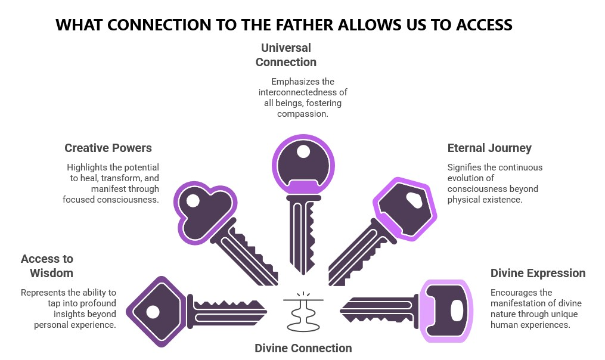

Chapter 7: You Are More Than You Think You Are
"You are gods, children of the Most High, all of you." — Psalm 82:6, quoted by Jesus in John 10:34
You've been told you're small. Limited. A temporary collection of cells destined for dust. Even religious traditions that speak of eternal life often emphasize your brokenness, your fallenness, rour 'sin nature' and your separation from the divine. But the truth is radically different? What if, as Jesus declared, quoting the Psalms, "You are gods"?
This statement wasn't hyperbole or metaphor. It was one of Jesus' most direct revelations about human nature—one so radical that the religious authorities of his day took up stones to kill him for it. And today, most religious teachings continue to minimize or reinterpret this declaration to make it less threatening to established doctrines.
When Jesus made this claim, it wasn't an exclusive statement about his unique divinity. Throughout his teachings, he invited his followers to recognize this same oneness. "On that day you will realize that I am in my Father, and you are in me, and I am in you" (John 14:20). He was revealing a state of consciousness available to all of us—a recognition of our true nature beyond the separate self.

Most religious teachings focus primarily on the relationship between the ego self and God as a separate being. But Jesus consistently pointed to a deeper reality—the recognition of our essential oneness with the divine. "The kingdom of God is within you" wasn't just poetic language but a direct pointer to where true divinity resides.
The evidence we've explored in previous chapters supports this understanding. Near-death experiences reveal consciousness that transcends the physical body. Reincarnation research shows an evolving soul journey beyond a single lifetime. Quantum physics demonstrates that consciousness shapes reality at the most fundamental level.
All these discoveries point to the same conclusion: what we truly are exists beyond the physical body and personality. We are multidimensional beings of consciousness, temporarily focused in physical form but not limited to it.
- Mystical experiences - Consistent reports across cultures of experiencing oneness with all that is
- Transpersonal psychology - Clinical evidence of awareness beyond the personal self
- Quantum non-locality - Scientific evidence that consciousness transcends space-time limitations
- Transformative NDEs - Direct experiences of expanded identity beyond the body
- Spiritual awakening - Documented cases of spontaneous recognition of true nature
Jesus demonstrated the capabilities of someone living from this higher consciousness—healing the sick, transforming matter (water into wine), calming storms, and perceiving beyond ordinary senses. These weren't supernatural miracles but expressions of natural abilities available to anyone operating from their divine nature rather than their limited ego.
This wasn't empty rhetoric but a practical promise based on his understanding of human potential. When we recognize our true nature beyond the limited self, we access capabilities that seem miraculous from the perspective of ordinary consciousness.
But if this is our true nature, why don't we experience it? Why do we feel limited, separate, and merely human? Jesus addressed this directly:
- Identification with the body - "The flesh counts for nothing" (John 6:63)
- Conditioned thinking - "Be transformed by the renewing of your mind" (Romans 12:2)
- Attachment to the world - "In this world but not of it" (John 17:16)
- Fear and separation - "Perfect love drives out fear" (1 John 4:18)
- Dying to the ego - "Whoever loses their life will find it" (Matthew 10:39)
- Child-like awareness - "Unless you change and become like children" (Matthew 18:3)
- Present-moment consciousness - "Do not worry about tomorrow" (Matthew 6:34)
- Oneness consciousness - "That they may be one as we are one" (John 17:22)
These teachings weren't about adhering to religious rules but about removing the veils that obscure our true nature. Jesus wasn't teaching us how to become something we're not but how to recognize what we already are beneath the conditioned identity.
This understanding transforms Jesus' role from savior to wayshower—someone who demonstrated the divine nature available to all of us rather than someone uniquely divine who died to save us from our inherent inadequacy. He didn't come to save us from our sins but to save us from our ignorance of our true nature.
When Jesus taught the Lord's Prayer, he began with "Our Father"—not "My Father." He was pointing to the divine source that we all share, the consciousness from which we all emerge. His relationship with the Father wasn't exclusive but exemplary—showing us what's possible when we recognize our own divine connection.
This perspective resolves many of the paradoxes in Christian theology. The concept of being "born again" becomes not just a religious conversion but an awakening to our higher nature. Salvation becomes not rescue from punishment but liberation from the illusion of separation. Eternal life becomes not just continued existence after death but recognition of our timeless nature beyond birth and death.
If you are an expression of divine consciousness temporarily focused in human form—not separate from God but an individualized center of God-consciousness—then:
- You have access to wisdom beyond your personal experience - through intuition, inspiration, and direct knowing.
- You have creative powers beyond ordinary human capacity - to heal, transform, and manifest through focused consciousness.
- You are connected to all beings at the level of your true nature - making compassion not just a moral virtue but a recognition of shared being.
- Your journey continues beyond this physical lifetime - as consciousness evolves through multiple experiences.
- Your purpose is to express your divine nature through your unique human form - bringing heaven to earth through conscious living.
This recognition doesn't lead to spiritual narcissism or ego inflation—quite the opposite. When we recognize our divine nature, we simultaneously recognize it in all beings. True self-knowledge dissolves separation rather than reinforcing it. The ego that would claim special status is precisely what must be transcended to experience our higher nature.
Jesus demonstrated this paradox perfectly. He acknowledged his oneness with the Father while washing his disciples' feet—showing that true recognition of our divine nature expresses as humble service rather than superiority.
In the next chapter, we'll explore practical approaches to accessing this higher consciousness—methods that align with Jesus' teachings and allow us to experience directly what he pointed to when he declared, "You are gods."